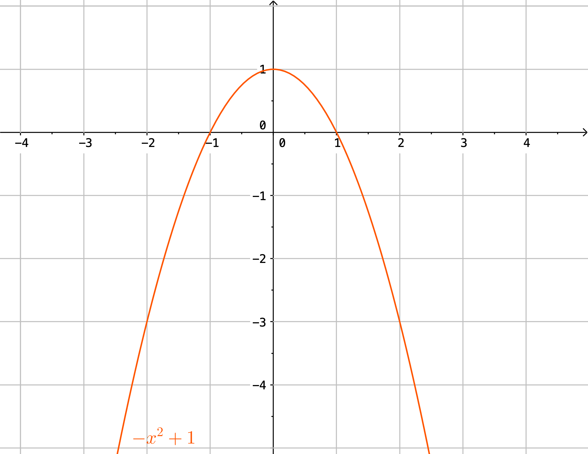
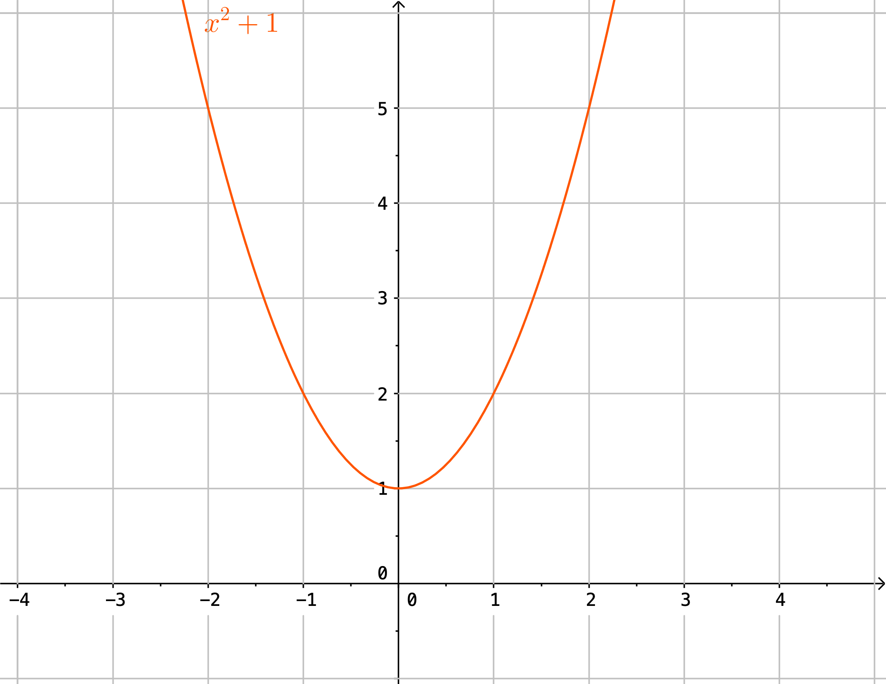
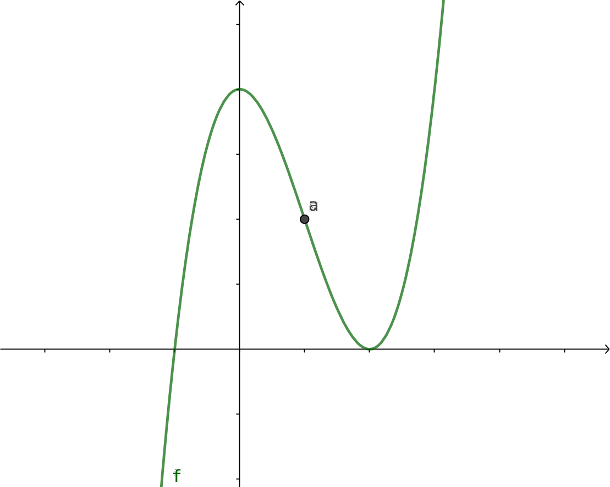
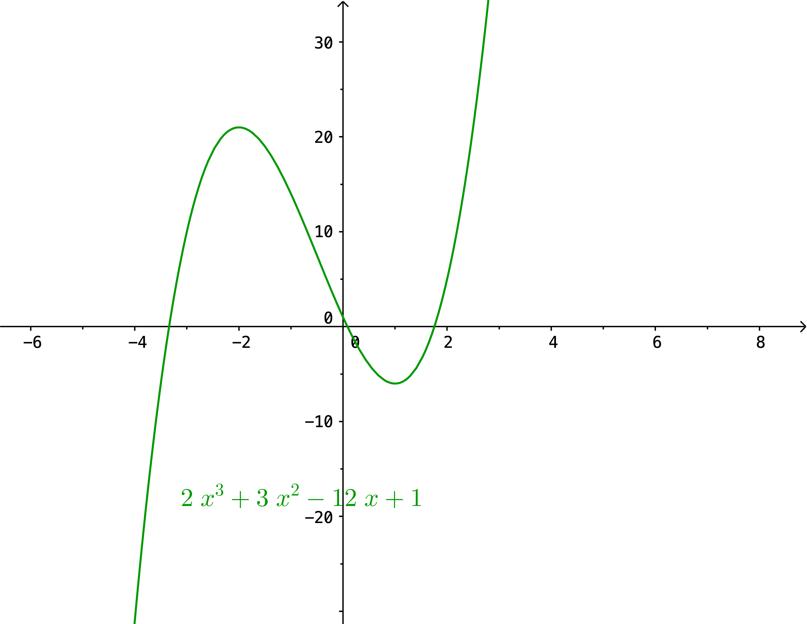
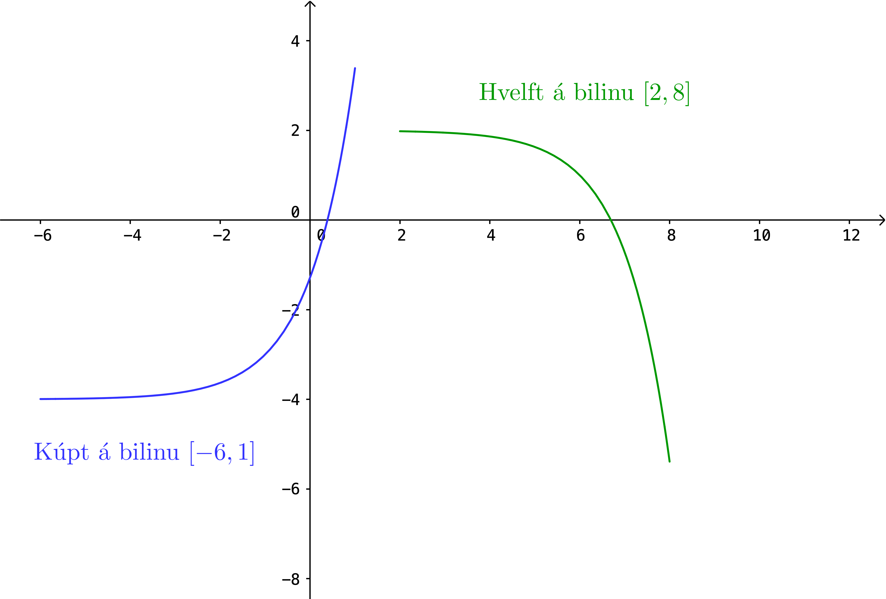
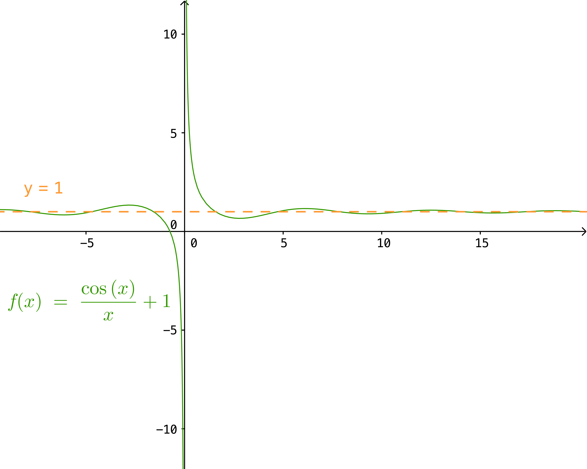
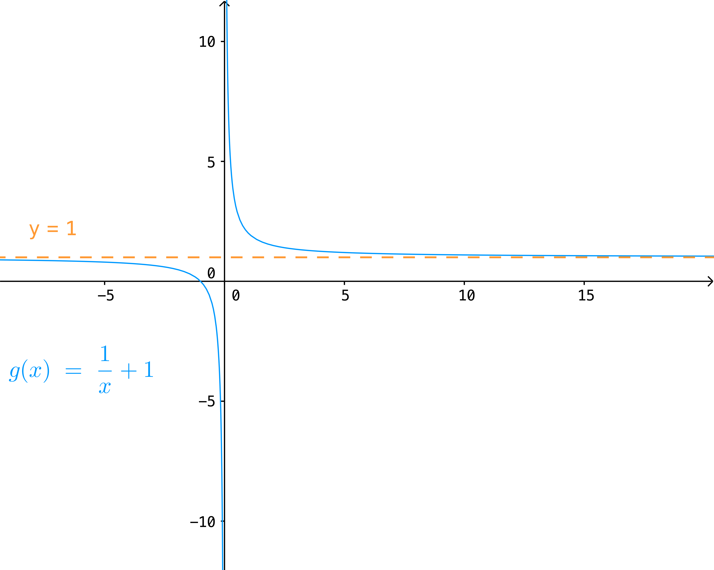
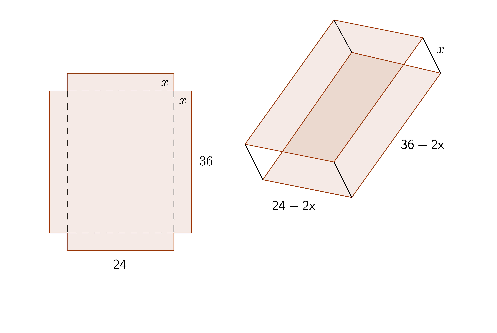
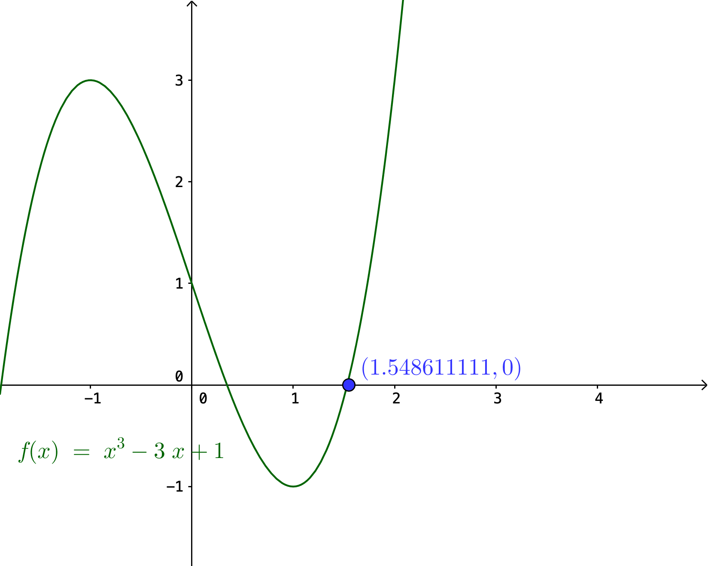

4. Hagnýting á diffrun
Nauðsynleg undirstaða
Föll
Markgildi
Afleiður
Then darkness took me, and I strayed out of thought and time, and I wandered far on roads that I will not tell. Naked I was sent back – for a brief time, until my task is done.
– Gandalf, The Two Towers
4.1. Línulegar nálganir
4.1.1. Staðbundnar nálganir
Skoðum diffranlegt fall \(f\) í grennd um fastan punkt \(a\). Látum \(x\) vera punkt í grennd um \(a\). Ef graf fallsins er ekki „mjög sveigt“ þá er snertillinn við \((a,f(a))\) næstum samsíða sniðlinum gegnum \((a,f(a))\) og \((x,f(x))\). Það þýðir að
Aðvörun
Athugið að hér er \(a\) fast en \(x\) breytist.
Athugasemd
Einnig er hægt að skrifa þetta á eftirfarandi hátt. Setjum \(\Delta x = x-a\) og \(\Delta y = f(x) - f(a)\) þá þýðir þetta að \(\Delta y \approx \Delta x f'(a)\).
Það er, breytingin á fallgildinum er um það bil breytingin í breytunni margfaldað við afleiðuna í punktinum.
4.1.2. Skilgreining: Línuleg nálgun
Skilgreining
Línuleg nálgun á falli \(f\) nálægt \(a\), eða 1. stigs Taylor-margliða \(f\) (sjá kafla. 10 um Taylor-margliður) í \(a\), er gefin með \(y=f(a)+f'(a)(x-a)\).
4.1.3. Dæmi: Línuleg nálgun
Dæmi
Finnum línulega nálgun fyrir fallið \(f(x)=\frac{1}{x}\) í punktinum \(a=2\).
Lausn
Athugum að \(f'(x)=-\frac{1}{x^2}\) svo \(f'(2)=-\frac{1}{4}\) og að \(f(a)=\frac{1}{2}\). Því fæst skv. skilgreiningu að línuleg nálgun fallsins í punktinum \(a=2\) sé
4.1.4. Diffur
Línulegar nálganir geta einnig verið notaðar til að ákvarða diffur, sem getur hjálpað okkur að meta hve mikið fallgildið breytist við smáa breytingu á inntaki fallsins. Þetta má gera með því að líta á Leibniz ritháttinn \(dy/dx\) þannig að \(dy\) og \(dx\) séu sjálfstæðar breytur (ekki bara táknræn fyrir afleiðuna). Þá gildir fyrir fallið \(y=f(x)\) að hægt er að taka afleiðuna hvoru megin og fæst þá
Þar sem við lítum á \(dy\) og \(dx\) sem breytur þá getum við margfaldað í gegnum jöfnuna með \(dx\) og fáum
Mikilvægt er að athuga að hér er \(dy\) fall af bæði \(x\) og \(dx\). Stæðurnar \(dy\) og \(dx\) eru kallaðar diffur eða deildi.
4.1.5. Dæmi: Diffur
Dæmi
Við viljum ákveða diffrið \(dy\) fyrir fallið \(y=x^4+2x^3+5x\). Athugum að \(f'(x)=2x+2\) og því fæst að
4.1.6. Setning: Skekkjumat
Setning
Gerum ráð fyrir að fallið \(y=L(x)\) sé línulegt nálgunarfall fyrir fallið \(f(x)\) (diffranlegt í \(a\)) í punktinum \(a\). Ef \(x\) breytist örlítið frá \(a\) yfir í \(a+h\), táknum þessa breytingu með \(\Delta x\), þá má meta breytinguna í \(y\), táknað \(\Delta y\), með
Athugasemd
Athugið að hér kjósum við að nota frekar \(\Delta y\) heldur en \(dx\), sem notað er í bókinni. Ástæðan er sú að almennt er litið á það sem svo að \(dx\) sé örsmæð sem stefnir á 0 á meðan \(\Delta x\) er einfaldlega breytingin á \(x\), sama hversu stór hún er. Við viljum að \(\Delta x\) sé lítil en gerum ekki endilega kröfu um að hún stefni á 0.
4.1.7. Dæmi: Skekkjumat
Dæmi
Höldum áfram með dæmi 4.13 hér að ofan, þar sem við komumst að því að línulegt nálgunarfall fyrir \(f(x)=\frac{1}{x}\) í punktinum \(a=2\) er
Gerum nú ráð fyrir að vitað sé að \(\Delta x = \frac{1}{5}\). Metum skekkjuna í \(y\).
Lausn
Við getum metið skekkjuna í \(y\) með því að reikna.
4.2. Útgildi
4.2.1. Skilgreining: Útgildi
Skilgreining
Við segjum að fall \(f\) hafi
staðbundið hágildi
en: local maximum, maximum, maximum in the small, relative maximum
Smelltu fyrir ítarlegri þýðingu.
Við segjum að fall \(f\) hafi staðbundið lággildi í punktinum \(x_0\) ef til er bil \(]a,b[\) umhverfis \(x_0\), sem er þannig að
Hér fyrir neðan má t.a.m. sjá að fallið \(y=-x^2+1\) hefur hágildið \(y=1\) þegar \(x=0\).
{kind=link}
Hér fyrir neðan má t.a.m. sjá að fallið \(y=x^2+1\) hefur lággildið \(y=1\) þegar \(x=0\).
{kind=link}
Við tölum um að fallið \(f\) hafi
staðbundið útgildi
en: extremum in the small, local extremum, relative extremum
Smelltu fyrir ítarlegri þýðingu.
4.2.2. Skilgreining: Stöðupunktur
Skilgreining
Allir þeir punktar \(c\) sem uppfylla að \(f'(c)=0\) eða \(f'(c)\) er ekki skilgreint kallast stöðupunktar (e. critical points) fallsins.
4.2.3. Setning Fermats
Setning Fermats
Ef fallið \(f\) hefur staðbundið útgildi í punktinum \(x_0\) og er diffranlegt þá er \(f'(x_0)=0\).
Aðvörun
Þó að \(f'(a)=0\) þá er ekki víst að \(a\) sé staðbundið útgildi.
Til dæmis þá hefur fallið \(f(x) = x^3\) ekkert staðbundið útgildi þrátt fyrir að \(f'(0) = 0\).
4.2.4. Annarar afleiðu prófið
Ef \(f'(x_0)=0\) og \(f''(x_0)<0\) þá er \(x_0\) staðbundið hágildi.
Ef \(f'(x_0)=0\) og \(f''(x_0)>0\) þá er \(x_0\) staðbundið lággildi.
Aðvörun
Athugið að ef \(f''(x_0)=0\) þá getur \(x_0\) verið hvort sem er staðbundið hágildi, staðbundið lággildi eða söðulpunktur.
4.2.5. Skilgreining: Beygjuskil og beygjuskilapunktur
Skilgreining
Ef fall \(f\) er samfellt í \(a\) og breytir um sveigju í \(a\) (þ.e. fallið fer úr því að vera kúpt yfir í að vera hvelft eða öfugt) þá er punkturinn \((a,f(a))\) nefndur beygjuskilapunktur fallsins og stundum sagt að fallið \(f\) hafi beygjuskil í \(a\).
{kind=link}
Líkt og áður segir þá gildir að sé fall \(f\) tvídiffranlegt á bilinu \(I\) þá er \(f\) kúpt þar sem \(f'' \geq 0\) á bilinu og hvelft þar sem \(f'' \leq 0\) á bilinu. Þar sem beygjuskilapunktur markar þau mót þar sem fallið breytir um sveigju má til sanns vegar færa að ef \(f\) hefur beygjuskil í \(a\) þá er \(f''(a)=0\). Athugum þó að þetta þýðir ekki að ef \(f''(a)=0\) þá séu endilega beygjuskil í \(a\); það er nauðsynleg en ekki nægjanleg forsenda fyrir beygjuskilum. Annað skilyrði sem uppfylla þarf er að formerki annarrar afleiðu fallsins breytist í \(a\).
4.2.6. Dæmi: Beygjuskilapunktur
Dæmi
Finnum beygjuskil fallsins \(f(x)=x^3+3x^2+0.5x\).
Lausn
Lítum á fallið \(f(x)=x^3 + 3x^2 + 0.5x\). Önnur afleiða þess er \(f''(x)=6x+6\). Samkvæmt annarrar afleiðu prófinu fæst að fallið hafi beygjuskil í
Þá er ljóst að \((-1,f(-1))=(-1,1.5)\) er beygjuskilapunktur fallsins \(f\)

4.2.7. Dæmi: Útgildi
Dæmi
Finnum öll útigildi fallsins \(f(x)=2 x^3 + 3 x^2 - 12 x + 1\).
Lausn
Ef við viljum finna öll útgildi fallsins \(f(x)=2 x^3 + 3 x^2 - 12 x + 1\) þá verðum við fyrst að finna hvaða gildi á \(c\) uppfylla að \(f'(c)=0\).
Við byrjum á því að reikna afleiðuna.
Ef við leysum nú jöfnuna \(f'(x)=0\) fæst
Athugum að við getum þáttað þessa annars stigs jöfnu í
sem hefur lausnina \(x=-2\) og \(x=1\). Möguleg hágildi eru því í þessum tveimur punktum. Ef við skoðum graf fallsins sjáum við að fallið hefur staðbundið hágildi í \(x=-2\) og staðbundið lággildi í \(x=1\). Fallið hefur engin víðfeðm útgildi þar sem \(\lim_{x \rightarrow -\infty} f(x) = -\infty\) og \(\lim_{x \rightarrow \infty} f(x) = \infty\).
{kind=link}
4.3. Meðalgildissetningin
4.3.1. Setning Rolle
Setning Rolle
Látum \(g:[a,b]\rightarrow{{\mathbb R}}\) vera samfellt fall. Gerum ráð fyrir að \(g\) sé diffranlegt í öllum punktum bilsins \(]a,b[\). Ef \(g(a)=g(b)\) þá er til punktur \(c\) á bilinu \(]a,b[\) þannig að \(g'(c)=0\).
4.3.2. Meðalgildissetningin
Meðalgildissetningin
Látum \(f:[a,b]\rightarrow{{\mathbb R}}\) vera samfellt fall. Gerum ráð fyrir að \(f\) sé diffranlegt í öllum punktum bilsins \(]a,b[\). Þá er til punktur \(c\) á bilinu \(]a,b[\) þannig að
Athugasemd
Niðurstöðuna úr meðalgildissetningunni en: mean value theorem
má orða svona:
Smelltu fyrir ítarlegri þýðingu.Í einhverjum punkti á bilinu er stundarbreytingin jöfn meðalbreytingunni yfir allt bilið.
4.3.3. Alhæfða meðalgildissetningin
Gerum ráð fyrir að föllin \(f\) og \(g\) séu samfelld á lokaða bilinu \([a,b]\) og diffranleg á opna bilinu \(]a,b[\). Gerum auk þess ráð fyrir að fyrir allar tölur \(x\) í \(]a,b[\) sé \(g'(x)\neq 0\). Þá er til tala \(c\in ]a,b[\) þannig að
4.3.4. Hjálparsetning: Afleiður fastafalla
Hjálparsetning
Við vitum að ef \(f\) er fastafall, það er \(f(x)=c\), þá er \(f'(x)=0\) fyrir öll \(x\) skv. einföldum afleiðureglum.
Ef \(f\) er diffranlegt fall á bili \(I\) sem er þannig að \(f'(x) = 0\) á \(I\), þá er \(f\) fastafall, þ.e. \(f(x) = c\) fyrir öll \(x\in I\).
4.3.5. Hjálparsetning
Hjálparsetning
Ef \(f\) og \(g\) eru diffranleg á bilinu \(I\) og \(f'(x)=g'(x)\) fyrir öll \(x \in I\), þá er \(f(x)=g(x)+C\) fyrir einhvern fasta \(C\).
4.4. Afleiður og lögun grafs
Afleiður geta sagt okkur til um lögun grafs falla, t.a.m. hvort fallið sé vaxandi eða minnkandi.
4.4.1. Skilgreining: Vaxandi/minnkandi
Skilgreining
Fall \(f\) er vaxandi á bili \(]a,b[\) ef um alla punkta \(x_1\) og \(x_2\) á \(]a,b[\) þannig að \(x_1 < x_2\) gildir að
Fall \(f\) er stranglega vaxandi á bili \(]a,b[\) ef um alla punkta \(x_1\) og \(x_2\) á \(]a,b[\) þannig að \(x_1 < x_2\) gildir að
Fall \(f\) er minnkandi á bili \(]a,b[\) ef um alla punkta \(x_1\) og \(x_2\) á \(]a,b[\) þannig að \(x_1 < x_2\) gildir að
Fall \(f\) er stranglega minnkandi á bili \(]a,b[\) ef um alla punkta \(x_1\) og \(x_2\) á \(]a,b[\) þannig að \(x_1 < x_2\) gildir að
Aðvörun
Athugið að þessi skilgreining er örlítið öðruvísi sett fram en sú í hjálparsetningu 3 í kafla 4.4 í bókinni. Hér er t.a.m. gerður greinarmunur á vaxandi/minnkandi og stranglega vaxandi/minnkandi föllum, þar sem annað skilyrðið er sterkara en hitt. Einnig er vert að veita því eftirtekt en hér er fallið aðeins skilgreint vaxandi/minnkandki á opna en ekki lokaða bilinu.
4.4.2. Setning
Setning
Látum \(f\) vera diffranlegt fall á bili. Þá er \(f\) vaxandi þá og því aðeins að \(f' \geq 0\).
4.4.3. Setning
Setning
Látum \(f\) vera diffranlegt fall á bili. Þá er \(f\) minnkandi þá og því aðeins að \(f' \leq 0\).
4.4.4. Setning
Setning
Látum \(f\) vera diffranlegt fall á bili. Ef \(f'>0\) þá er \(f\) stranglega vaxandi.
4.4.5. Setning
Setning
Látum \(f\) vera diffranlegt fall á bili. Ef \(f'<0\) þá er \(f\) stranglega minnkandi.
Aðvörun
Diffranlegt fall getur verið stranglega vaxandi/minnkandi án þess að afleiðan sé alls staðar stærri/minni en 0. Til dæmis er afleiða \(f(x)=x^3\) jöfn 0 í \(x=0\) en fallið er stranglega vaxandi á öllum rauntalnaásnum.
4.4.6. Fyrstu afleiðu próf
Athugasemd
Gerum ráð fyrir að \(f(x)\) sé samfellt fall á bilinu \(I\) með stöðupunkt í \(c\). Ef \(f\) er diffranlegt á \(I\), nema kannski í punktinum \(c\), þá er uppfyllir \(f(c)\) eitt af eftirfarandi skilyrðum:
Ef formerki \(f'\) breytist frá því að vera jákvætt þegar \(x<c\) yfir í að vera neikvætt þegar \(x>c\), þá er \(f(c)\) staðbundið hágildi \(f\).
Ef formerki \(f'\) breytist frá því að vera neikvætt þegar \(x<c\) yfir í að vera jákvætt þegar \(x>c\), þá er \(f(c)\) staðbundið lággildi \(f\).
Ef \(f'\) hefur sama formerki fyrir \(x<c\) og \(x>c\), þá er \(f(c)\) hvorki hágildi né lággildi \(f\).
4.4.7. Kúpni
4.4.8. Skilgreining: Kúpt og hvelft
Skilgreining
Látum \(f\) vera diffranlegt fall á opnu bili \(I\). Ef \(f'\) er vaxandi á \(I\) þá segjum við að fallið sé kúpt. ef \(f'\) er minnkandi á \(I\) segjum við að fallið sé hvelft. Talað er um að ákvarða kúpni falls þegar ákvarðað er á hvaða bilum það er kúpt og á hvaða bilum það er hvelft.
4.4.9. Dæmi: Kúpt og hvelft
Dæmi
{kind=link}
4.4.10. Annarrar afleiðu próf
Athugasemd
Látum \(f\) vera tvídiffranlegt fall yfir bilið \(I\).
Ef \(f''(x) \geq 0\) fyrir öll \(x \in I\), þá er \(f\) kúpt á bilinu \(I\)
Ef \(f''(x) \geq 0\) fyrir öll \(x \in I\), þá er \(f\) hvelft á bilinu \(I\)
Aðvörun
Föll eru ekki alltaf annað hvort kúpt eða hvelfd alls staðar. Alveg eins og það eru til föll sem eru sums staðar vaxandi og sums staðar minnkandi, þá eru mörg föll sums staðar kúpt og sums staðar hvelfd. Þetta á til dæmis við um hornaföllin.
4.4.11. Ábending: Jafngildi
Athugasemd
Fyrir tvídiffranlegt fall \(f\) þá er eftirfarandi jafngilt:
\(f\) er kúpt
\(f'\) er vaxandi
\(f'' \geq 0\)
Og fyrir tvídiffranlegt fall \(g\) þá er eftirfarandi jafngilt:
\(g\) er hvelft
\(g'\) er minnkandi
\(g'' \leq 0\)
Aðvörun
Hvort fall er kúpt eða hvelft er algjörlega óháð því hvort það er vaxandi eða minnkandi. Til dæmis er \(f(x) = x^2\) kúpt en það er vaxandi þegar \(x>0\) og minnkandi þegar \(x<0\).
4.4.12. Samantekt
Athugasemd
Formerki \(f'\) |
Formerki \(f''\) |
Er \(f\) vaxandi eða minnkandi? |
Kúpni |
Jákvætt |
Jákvætt |
Vaxandi |
Kúpt |
Jákvætt |
Neikvætt |
Vaxandi |
Hvelft |
Neikvætt |
Jákvætt |
Minnkandi |
Kúpt |
Neikvætt |
Neikvætt |
Minnkandi |
Hvelft |
4.5. Aðfellur
Afleiður eru nánast nauðsynlegt tól þegar kemur að því að teikna gröf falla. Þær hjálpa okkur að vita hvenær fallið er vaxandi og minnkandi og hvernig kúpni þess er. Annað tæki sem getur reynst mjög hjálplegt þegar graf falls er teiknað eru aðfellur.
Aðfella fyrir fall er lína sem fallið leggst upp að og nálgast óendanlega mikið (eða nær í sumum tilfellum). Til eru þrjár gerðir af aðfellum, þær eru lóðfellur, láfellur og skáfellur.
4.5.1. Skilgreining: Lóðfella
Skilgreining
Ef um fallið \(f(x)\) gildir annað hvort að \(|\lim_{x\to a^-} f(x)|= \infty\), þ.e.a.s.að \(\lim_{x\to a^-} f(x)=\pm \infty\), eða \(|\lim_{x\to a^+} f(x)|= \infty\) þá er línan \(x=a\) lóðrétt aðfella eða lóðfella fyrir fallið \(f\).
4.5.2. Skilgreining: Láfella
Skilgreining
Ef \(\lim_{x \rightarrow \infty} f(x)=L\) eða \(\lim_{x \rightarrow -\infty} f(x)=L\) segjum við að línan \(y=L\) sé lárétt aðfella eða láfella fyrir \(f\).
4.5.3. Skilgreining: Skáfella
Skilgreining
Ef um fallið \(f(x)\) gildir að \(\lim_{x \rightarrow \infty} f(x)=hx+k\) eða \(\lim_{x \rightarrow -\infty} f(x)=hx+k\) þar sem \(h,k \in \mathbb{R}\) og \(h\neq 0\) þá hefur fallið skáfellu í \(y=hx+k\). Þetta gerist einungis ef stig teljarans er einum hærra en stig nefnarans.
4.5.4. Dæmi: Lóðfella og láfella
Dæmi
Finnum aðfellur fallsins \(f(x)=\frac{1}{x-2}-4\).
Lausn
Fallið \(f(x)=\frac{1}{x-2}-4\) hefur láfellu í \(y=-4\) og lóðfellu í \(x=2\) þar sem að \(x=2\) er núllstöð í nefnara og
{kind=link}
4.5.5. Dæmi: Lóðfella og skáfella
Dæmi
Finnum aðfellur fallsins \(f(x)=\frac{x^2}{x-2}\).
Lausn
Fallið \(f(x)=\frac{x^2}{x-2}\) hefur lóðfellu í \(x=2\) og skáfellu í \(y=x+2\) þar sem að \(x=2\) er núllstöð í nefnara auk þess sem að fallið hefur teljara af einu hærra stigi en nefnarinn og

4.5.6. Ábending: Föll sem sveiflast og föll sem nálgast stöðugt
Í sumum tilfellum snerta föll láfellur sínar aldrei á meðan önnur sveiflast fram og til baka um láfelluna en sveiflan verður sífellt minni og minni. Sem dæmi um þetta má líta á föllin \(f(x)=\frac{\cos(x)}{x}+1\) og \(g(x)=\frac{1}{x}+1\) þar sem fallið \(f\) sveiflast fram og til baka um láfelluna \(y=1\) á meðan fallið \(g\) nálgast láfelluna \(y=1\) stöðugt en án þess þó nokkru sinni að snerta hana.
|  |  |
{kind=link}
{kind=link}
4.6. Að teikna graf falls
Þegar teikna á graf fallsins \(f\) er gagnlegt að fara í gegnum atriðin á eftirfarandi lista:
Ákvarðið \(f'\) og \(f''\) og þáttið útkomurnar ef hægt er.
- Kannið \(f\) til að ákvarða skilgreiningarmengi þess auk eftirfarandi eiginleika:
Lóðréttar aðfellur. (Leitið að rótum nefnara)
Láréttar aðfellur og skáfellur. (Finnið \(\lim_{x \to \pm\infty}f(x)\).)
Samhverfa (er \(f\) jafnstætt eða oddstætt?)
Skurðpunktar við ása (punktar með hnit \((x,0)\) eða \((0,y)\)), endapunktar skilgreiningamengisins eða aðrir punktar á grafinu þar sem einfalt er að reikna út bæði hnitin.
- Kannið \(f'\) til að ákvarða eftirfarandi:
Útgildispunkta.
Punktar þar sem \(f'\) er ekki skilgreint (sérstöðupunktar, endapunktar skilgreiningarmengis \(f\) og lóðréttar aðfellur)
Bilin þar sem \(f'\) er jákvætt og neikvætt. Það er góð hugmynd að setja þessar upplýsingar fram í töflu. Á töfluna má svo líka merkja inn niðurstöður um hvar \(f\) er vaxandi og minnkandi og hvort útgildispunktar séu staðbundin hágildi eða lággildi.
- Kannið \(f''\) til að ákvarða eftirfarandi:
Punktar þar sem \(f''(x)=0\).
Punktar þar sem \(f''\) er ekki skilgreint (sérstöðupunktar, endapunktar skilgreiningarmengis \(f\) og lóðréttar aðfellur, e.t.v. auk fleiri punkta þar sem \(f'\) er skilgreint en ekki \(f''\).)
Bilin þar sem \(f''\) er jákvætt og neikvætt og \(f\) þar af leiðandi kúpt og hvelft. Hér er gagnlegt að útbúa töflu.
Beygjuskilapunktar.
4.7. Hagnýtingar í bestun
Afleiður má nota í bestun, þ.e. sú fræði sem snýr að því að hámarka eða lágmarka einhverja útkomu.
4.7.1. Dæmi: Afleiður til að leysa bestunarverkefni
Dæmi
Pappakassi er brotinn saman úr flatri einingu sem má lýsa þannig að hún sé rétthyrningur, þar sem búið er að taka ferningingslaga sneiðar úr hornunum hans, með hliðarlengdirnar \(x\). Rétthyrningurinn er með breiddina 24 einingar en lengdina 36 einingar.
{kind=link}
Finnum hvað stærsta mögulega rúmmál kassans.
Lausn
Látum \(V\) standa fyrir rúmmál kassans. Skv. formúlu fyrir rúmmál ferstrendings fæst að \(V\) má lýsa með jöfnunni
Ljóst er að lengd (\(L\)), breidd (\(B\)) og dýpt (\(D\)) þurfa vera jákvæðar stærðir svo við sjáum það strax að \(x \in [0,12]\). Athugum nú að núllstöð fyrstu afleiðu segir okkur til um hvenær fall vex og hvenær það minnkar. Með því að finna hágildi fallsins \(V\), þ.e. það gildi fyrir \(x\) þar sem rúmmálið hættir að vaxa og byrjar að minnka, getum við funndið út hvert stærsta mögulega rúmmál hans er. Við skulum því finna afleiðu \(V\).
Við getum notað lausnarformúlu annars stigs margliða til að leysa jöfnuna \(V'(x)=0\) og fengið að
Önnur afleiða fallsins er
Þar sem \(V''(10 + 2\sqrt{7}) \approx 127 >0\) en \(V''(10 - 2\sqrt{7}) \approx -127 <0\) fæst samkvæmt annarrar afleiðu prófinu að \(10 + 2\sqrt{7}\) er lággildi (þar sem fallið er kúpt) en \(10 - 2\sqrt{7}\) hágildi \(V\) (þar sem fallið er hvelft). Því er \(x = 10 - 2\sqrt{7}\) það gildi á \(x\) sem hámarkar rúmmál kassans.
Við hefðum einnig getað útilokað \(10 + 2\sqrt{7}\) sem lausn þar sem \(10 + 2\sqrt{7}) \approx 15,3\) en hér að ofan komumst við að því að \(x \in [0,12]\) og \(10 + 2\sqrt{7}\) liggur ekki á því bili.
Af þessu fæst að hámarksrúmmál kassans er

4.8. Regla l’Hôpital
4.8.1. Regla l’Hôpital, einhliða útgáfa
l’Hôpital, einhliða útgáfa
Gerum ráð fyrir að föllin \(f\) og \(g\) séu diffranleg á opnu bili \(]a,b[\) og að \(g'(x)\neq 0\) fyrir öll \(x\in ]a, b[\). Gerum enn fremur ráð fyrir að
(Hér má \(L\) vera rauntala, \(\infty\) eða \(-\infty\).)
Þá er
Eins má skoða markgildi frá vinstri \(x\to a^-\).
4.8.2. Regla l’Hôpital
l’Hôpital
Gerum ráð fyrir að föllin \(f\) og \(g\) séu diffranleg á bilum \(]x_1, a[\) og \(]a, x_2[\) og að \(g'(x)\neq 0\) fyrir öll \(x\) í þessum bilum. Gerum enn fremur ráð fyrir að
(Hér má \(L\) vera rauntala, \(\infty\) eða \(-\infty\).)
Þá er
4.8.3. Dæmi: l’Hôpital
Dæmi
Notum reglu l’Hôpital til að sýna að \(\lim_{x\to 0} \sin(x)/x = 1\).
Lausn
Sjáum að \(f(x) = \sin(x)\) og \(g(x)\) eru diffranleg í grennd um 0 og að \(g'(x) = 1 \neq 0\). Þá fæst að
4.8.4. Regla l’Hôpital, \(\infty\)-útgáfa
Regla l’Hôpital, \(\infty\)-útgáfa
Gerum ráð fyrir að föllin \(f\) og \(g\) séu diffranleg á bilum \(]x_1, \infty[\) og að \(g'(x)\neq 0\) fyrir öll \(x\in ]x_1, \infty[\). Gerum enn fremur ráð fyrir að
(Hér má \(L\) vera rauntala, \(\infty\) eða \(-\infty\).)
Þá er
4.8.5. Regla l’Hôpital, tvíhliða útgáfa
Regla l’Hôpital, \(\infty\)-útgáfa
Gerum ráð fyrir að föllin \(f\) og \(g\) séu diffranleg á bilum \((x_1, a)\) og \((a, x_2)\) og að \(g'(x)\neq 0\) fyrir öll \(x\) í þessum bilum. Gerum enn fremur ráð fyrir að
(Hér má \(L\) vera rauntala, \(\infty\) eða \(-\infty\).)
Þá er
4.9. Aðferð Newtons
4.9.1. Tölulegar vs. analytískar aðferðir
Leiðum hugan að því algenga verkefni sem nemendur standa of frammi fyrir, að finna núllstöðvar falla. Í grunn- og framhaldsskólum er kennt að finna núllstöðvar fyrir fyrsta- og annars stigs margliður. Margir framhaldsskólar snerta einnig á aðferðum fyrir þriðja- og fjórða stigs margliður. Eða hvað með 5. stigs margliður? Eitthvað á borð við
Raunin er sú að engin þekkt leið er til sem finnur núllstöðvar margliða af stigi 5 eða hærra. Jafnvel formúlurnar sem til eru fyrir margliður af stigi 3 og 4 eru svo flóknar að fæstir skólar hafa fyrir því að kenna þær. En hvað er þá gert þegar okkur vantar að vita hverjar núllstöðvar margliða af hærra stigi eru?
Þegar analytískar aðferðum þ.e. aðferðir sem nota hefðbundna, stærðfræðilega nálgun til að finna nákvæmar lausnir við stærðfræðilegum spurningum og verkefnum, er ekki til að skipta, þá taka við tölulegar aðferðir, þ.e. aðferðir þar sem fundin er góð nálgun á hinni raunverulegu lausn.
Jafnvel þótt fæstir kynnist hugtökunum analytísk aðferð og töluleg aðferð er kennt nánast eingöngu að notast við analytískar aðferðir, þá höfum við öll rekist á þær tölulegu, jafnvel þó við vitum ekki af því. Nánast allar tölvur, allir símar, allar reiknivélar og allt sem notast við einhvers konar tölvu lógík notar tölulegar aðferðir í útreikningum sínum. Þegar þú stimplar inn í reiknivélina þína \(\cos(0)\) og hún birtir á skjánum svarið \(1\), þá er það ekki af því að vasareiknirinn reiknaði gildið \(\cos(0)\). Reiknivélin sótti einhvert reiknirit sem nálgar gildi kósínus-fallsins upp á eitthvað ákveðið marga marktæka aukastafi.
Aðferð Newtons er ein af þeim tölulegu aðferðum sem til eru sem finnur nálgunargildi á núllstöðvar margliða.
4.9.2. Hvernig virkar aðferð Newtons?
Aðferð Newtons virkar þannig að í byrjun er giskað á einhverja núllstöð, köllum ágiskunina \(x_0\). Aðferðin notar svo reiknirit sitt til þess að koma með aðra (yfirleitt) betri ágiskun, þ.e. \(x_1\) út frá þeirri fyrstu. Hún notar svo þá tölu til að búa til aðra ágiskun, og svo koll af kolli þar til valið er að hætta af því nálgunin er nógu góð. Aðferðin fikrar sig því sífellt nær réttu gildi en án þess þó endilega að vita nokkurn tímann hvert hárrétt gildi er. Því betri sem upphafságiskunin er, því styttri tíma tekur að fá þokkalega góða nálgun.

4.9.3. Setning: Aðferð Newtons
Aðferð Newtons
Byrjað er á því að velja eina tölu \(x_0\) sem fyrsta nálgunargildið. Næsta nálgunargildi á eftir er svo reiknað með því að nota
Almennt gildir fyrir allara náttúrulegar tölur \(n\in \mathbb{N}\) að nálgunargildi númer \(n\), þ.e. \(x_n\) fæst með formúlunni
Athugasemd
Aðferð Newton er ekki takmörkuð við það að nálga núllstöðvar margliða. Aðferðina má nota til að nálga núllstöð nokkurn veginn hvaða falls sem er, þó svo að í sumum tilfellum virki hún betur en í öðrum. Það er þó nauðsynlegt að fallið sé að minnsta kosti einu sinni diffranlegt.
4.9.4. Dæmi: Aðferð Newtons
Dæmi
Notum aðferð Newtons til þess að finna fimmta stigs nálgun (þ.e. \(x_5\)) á núllstöð margliðunnar
á bilinu \([1,2]\) þar sem upphafsgildið okkar er \(x_0=2\).
Lausn
Athugum að fyrsta afleiða fallsins er
Við byrjum á að reikna fyrsta stigs nálgun núllstöðvarinnar:
Því næst finnum við annars stigs nálgun núllsöðvarinnar:
Höldum þessu áfram þar til við höfum fundið \(x_5\). Fáum að lokum að
Ef við hefðum haldið áfram hefði talan sem fékkst í \(x_5\) endurtekið sig í \(x_6\) og þá líklega ekki breyst eftir það, m.ö.o. aðferð Newtons hverfur þar náð hámarksnákvæmni sinni.
Af myndinni má sjá að þetta er ágætis nálgun á núllstöðinni.
{kind=link}
Það þarf að þysja ansi langt inn til að sjá að þetta er ekki raunveruleg núllstöð fallsins. Skekkjan virðist vera innan við 0,1.
{kind=link}
4.9.5. Hvað gæti klikkað?
Á einhverjum tímapunkti fæst nálgunargildi \(x_n\) þannig að \(f'(x_n)=0\) en \(f(x_n) \neq 0\). Af þessu leiðir að snertillinn við \(f\) í \(x_n\) sker ekki \(x\)-ásinn og þar með er ekki hægt að halda ferlinu áfram.
Nálganirnar fikrast í átt að annarri rót en þeirri sem leitað var að. Ef fallið hefur fleiri en eina rót og leitað var af ákveðinni rót þarf að takmarka sig við leit á ákveðnu bili. Ef önnur rót slysast inn á bilið getur það gerst að aðferðin finni hana í staðinn.
Aðferðin bregst algerlega og skilar gildi sem er ekki nálægt neinni rót. Þetta getur t.a.m. gerst þegar upphafságiskunin er ekki nægilega góð og ágiskanirnar sem koma í framhaldinu sveiflast á milli tveggja gilda.